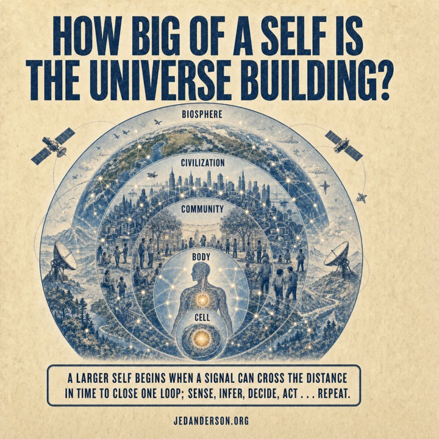
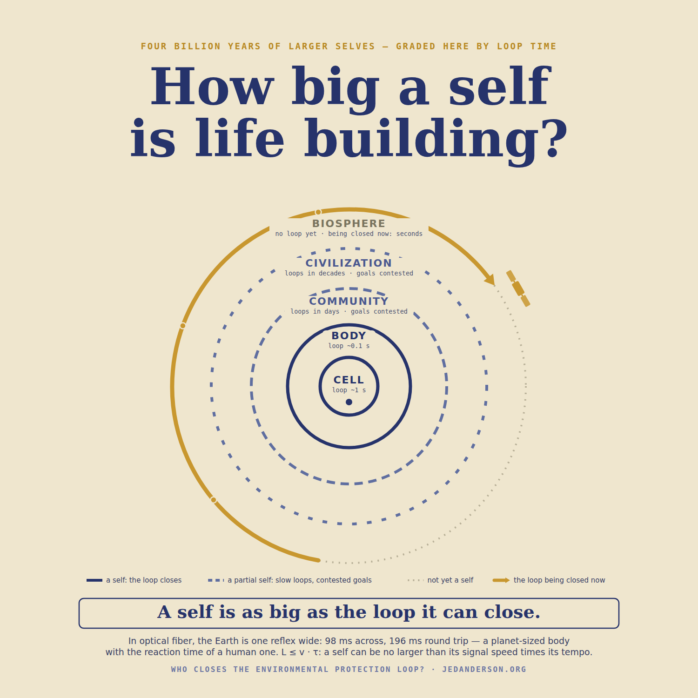

The corpus's central claim, stated as a law, defined word by word, tested against the whole record, and offered for breaking. One variable is left open, and the essay ends on it.

A larger self begins when a signal can cross the distance in time to close one loop: sense, infer, decide, act … repeat.
This law is not new. That is the point of it. It has been enforcing itself since the first cell, on every living thing, at every scale, without exception—it just never got written down.
Two claims of status, stated precisely so they can be checked. First, this is a law in the sense W. Ross Ashby used the word for his law of requisite variety: an empirical regularity with a mechanism, holding across every case in its domain, stated so that one counterexample would kill it. Second, beneath the biological law sits a physical one that is not a candidate for killing, because it is causality itself: nothing can be a self beyond the reach of its own signals. The first is offered for breaking in section 05. The second is the floor the first stands on.
Everything else in this corpus—the history of environmental protection as a speed problem, the four jobs, the hundred-billion-fold gap, the machine loop now closing—is this law, applied. This essay is its canonical statement.
A law this short has no room for a loose word. Each one was chosen against alternatives and carries a condition. Read the anatomy once and the law stops being a slogan and becomes an instrument.
The positive evidence is the history of life read as a series of loop closures, each at a new distance, each inaugurating a larger self. Chemistry closed the first loop across a micron. Neurons closed it across a meter—a tenth of a second where diffusion needed decades—and bodies began. Speech closed it across a village, at thirty-nine bits per second, and the first selves with goals outside a body began: a fishery, a forest, a soil. Writing let a loop close across a lifetime; law made its decisions durable; instruments made the invisible sensible. Inside an industrial fence line in 1975, a distributed control system closed all four jobs in seconds, and a bounded machine self has run there ever since. The full history, with its dates and latencies, is the companion essay Who Closes the Environmental Protection Loop?

The negative evidence matters more, because a law is tested by what it forbids. Three refusals, each on schedule. The telegraph world, 1844 onward: signals crossing a planet at light speed, no planetary self—a crossing without a closing. The market and the network: loops closing in milliseconds across continents, no self—closure without oneness, a churn of micro-selves with contested references. And the biosphere itself, for four and a half billion years: feedback without a goal, sensors without a nervous system, the thermostat with no one to set it—never once a self, exactly as the law requires, because no loop with the planet as its object had ever closed in time. The dotted ring is the law's cleanest prediction, and it held for the entire history of the world.
Between the closures and the refusals sit the partial selves, and the law grades them too. A civilization is a real self at the tempo of decades—it defends borders, currencies, and laws on that clock—and no self at all at the tempo of a river. Across eight landmark environmental cases of the last century, the loop from onset of harm to remedy averaged half a lifetime, with half of that spent merely noticing. A self exists with respect to the variables its loop can keep up with, and to no others. The dashes on the rings are that sentence, drawn.
Underneath the law sits a bound that no evolution and no engineering can negotiate with: a signal takes time to travel, so a self that must close its loop within a tempo τ, through a channel of speed v, can span at most about v·τ—within the factor of two the round trip costs. Size ≤ signal speed × tempo. This is not a metaphor for causality; it is causality, applied to selves.
| Tempo of the loop | Largest possible self (in optical fiber) |
|---|---|
| 1 millisecond | ~200 km—a metropolis |
| 100 milliseconds—a reflex | ~20,000 km—the Earth, exactly |
| 1 second | ~200,000 km—half way to the Moon |
Read the middle row twice. The farthest two points on Earth's surface are 20,015 kilometers apart; in glass, a signal crosses that in 98 milliseconds, 196 for the round trip. A human body, at nerve speed, crosses itself on the same clock. In fiber, the Earth is one reflex wide. The planet is not a strained candidate for selfhood at the margin of the possible. It is precisely the size of a body whose nerves run at light speed—eligible for 3.5 billion years, and waiting only for the loop.
A law earns the name by naming its own kill condition. Here is this one's: show one self, at any scale, at any point in 3.5 billion years, larger than the loop it can close. One genuine counterexample—a system that persists as one thing, around one goal, across a distance its signals cannot close in time—and the law falls.
The strongest candidates have been tried, and each one sharpened the law instead of breaking it. Pando, the forty-hectare aspen clone, looks like a self wider than its signals—until you ask at what tempo it is a self: seasons, exactly the clock its root-borne signals keep. Fungal networks, the same. The honeybee colony looks like a counterexample to "one body, one self"—and is instead the law's best confirming instance: pheromone loops closing across meters in minutes, around the single shared goal one germline enforces. The internet looks like a planetary self—and is the "one loop" clause's standing demonstration that it is not. Every apparent exception has resolved into a tempo the challenger had not checked or a goal the parts did not share. The invitation stands open anyway. That is what the word law costs, and it is the entire price of using it.
The pieces of this law are old, and naming their owners makes the law stronger, not weaker. Wiener built cybernetics on selves as feedback. Ashby wrote the variety condition a regulator must meet, and with Conant proved that every good regulator must contain a model of what it regulates—which is why the infer stage exists, and why a planetary self must carry a planetary model. Valentin Turchin described metasystem transitions: new levels of organization arising when a new control loop closes over the old ones. Maynard Smith and Szathmáry mapped the major transitions in evolution. McLuhan saw electric media as an extension of the nervous system; Sagan gave the largest frame its famous sentence; Hofstadter, listening to Bach of all things, concluded that a self simply is a loop. In current theoretical biology, Friston's framework defines a thing by the sensory and active states that bound it, and Krakauer and Flack measure individuality as information a system carries from its own past into its own future.
What is new here is small and specific, which is the only kind of new worth claiming: the conjunction. The channel condition, the timeliness condition, the unity condition, and the persistence condition, written as one testable sentence, with the four jobs named inside it, and applied to the one domain where the stakes are a planet—environmental protection as the construction of the largest self. The pattern belongs to the giants. The sentence is offered here. And by Stigler's law of eponymy—no scientific law is named after its original discoverer, a law Stigler himself attributed to Merton—it is named for what it says, which is the only naming that was ever safe.
Bach could raise a cathedral of counterpoint from a subject a few notes long. Life used four: sense, infer, decide, act. The first cell stated the theme three and a half billion years ago. The body answered it in a tenth of a second; the village answered in days; the civilization in decades, each voice larger and slower than the last, exactly as the law priced them. For the whole history of the planet, the outermost voice was silent, because its entrance was physically impossible to play: no channel could carry the theme across a world in time.
Now the channel exists, the model exists, and the actuators are being wired: sensors in the rivers sampling every second, inference on the planet's own record in seconds, valves and pumps and advisories under envelopes written in advance. The fence-line self of 1975 is stepping outdoors. The planet's entrance is being written now—not as destiny, but as the seventh performance of the only move life has ever made when a larger self became possible.
And the law, having governed everything else, leaves exactly one thing open. No loop in 3.5 billion years has ever chosen its own goal. The thermostat defended nothing because nothing set it; the cell defended the cell; the machine loop will defend whatever is written into it. The largest self in the history of the planet will inherit its purpose from the one voice that can say what protected means. The law is finished. The goal is not.
What we point it at is the only question that was ever open.
Every load-bearing number above is computed or documented. Diffusion time τ ≈ L²/D with D ≈ 10⁻⁹ m²/s: one millisecond across a micron, 10⁹ seconds—32 years—across a meter. Nerve conduction 0.5–120 m/s. Speech carries 39.15 ± 5.10 bits per second across 17 languages (Coupé, Oh, Dediu & Pellegrino, Science Advances, 2019). Honeywell TDC 2000, the first distributed control system, November 1975. Earth's farthest surface points: πR ≈ 20,015 km; in fiber at ≈2.04×10⁸ m/s, 98 ms one way, 196 ms round trip; the tempo table follows from L ≤ v·τ. The eight-case decomposition (noticing ≈ half of each loop, median 26 years from onset to attribution) and the era-by-era latencies are in the companion pieces Who Closes the Environmental Protection Loop? and The Loop Through Time, with full sources.
Scope, stated once: "self" is functional throughout—no claim about consciousness is made or needed. The law states the inaugurating condition; ripeness further requires what "one" and "repeat" already carry: a goal the parts share, and a loop that defends its own continuation. Selfhood is tempo-relative: a system is a self with respect to the variables its loop can keep up with, and to no others.